Reducerea riscurilor
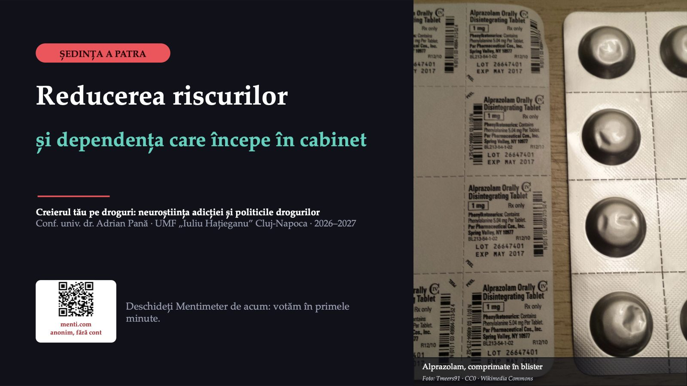
1 / 45Bine ați venit la a patra ședință, de data aceasta pe Teams. Titlul are două jumătăți: ce face medicul cu cineva care consumă și nu se poate opri, și dependența pe care o poate produce, fără nicio intenție, chiar rețeta lui. Deschideți Mentimeter de acum, de pe telefon sau din linkul din chat: votăm în primele minute.
Biletul de ieșire are nevoie de voi
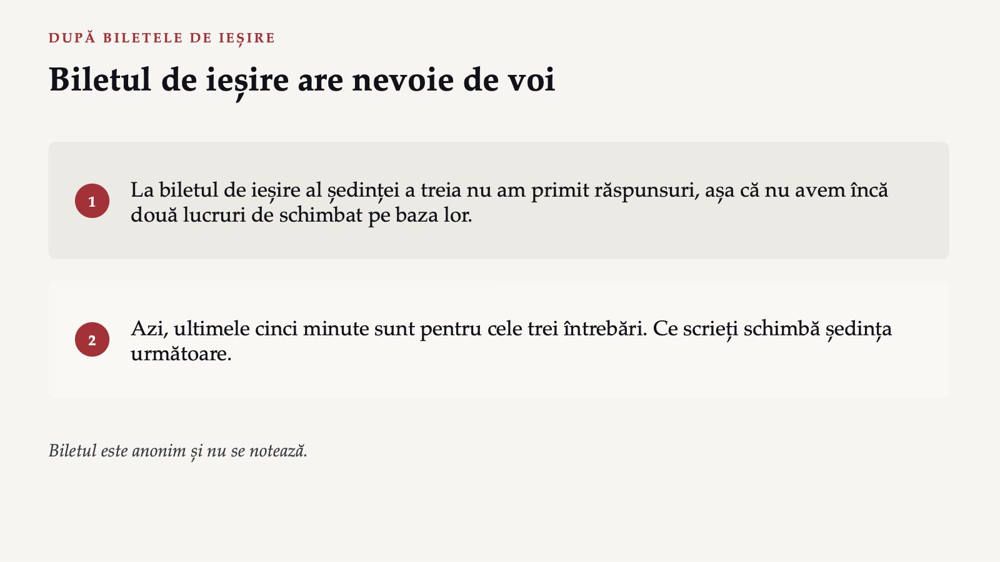
2 / 45Biletul de ieșire al ședinței a treia a rămas fără răspunsuri, deci nu avem încă ce schimba pe baza lui. Azi îi păstrăm ultimele cinci minute: trei întrebări pe Mentimeter, cu linkul și în chat. Biletul este anonim și nu se notează, iar ce scrieți acolo schimbă ședința următoare.
Două rețete în aceeași dimineață
![LA CABINETUL DE FAMILIE Două rețete în aceeași dimineață DOAMNA ELENA, ȘAIZECI ȘI ȘAPTE DE ANI Rețeta lunară de alprazolam, începută acum șase ani, după moartea soțului, „doar pentru câteva săptămâni”. Într-un weekend fără pastile a tremurat și a avut palpitații. UN BĂRBAT DE TREIZECI ȘI PATRU DE ANI Operat de hernie de disc acum trei luni; a primit atunci un opioid. Cere acum „încă o cutie, că altfel nu pot lucra”. Niciunul nu a cumpărat ceva de pe stradă. Amândoi au început cu o rețetă. Răspunsul provizoriu: medicul are două datorii. Să nu creeze dependențe noi și să-i țină în viață pe cei deja dependenți. Cazuri construite pentru ședință.](diapozitive/C04/003.jpg) 3 / 45
3 / 45Sunteți în stagiu la un cabinet de medicină de familie. Prima pacientă, doamna Elena, are șaizeci și șapte de ani și vine, ca în fiecare lună, pentru rețeta de alprazolam. L-a început acum șase ani, după moartea soțului, „doar pentru câteva săptămâni”; când a rămas fără pastile peste un weekend, a tremurat și a avut palpitații. Al doilea pacient are treizeci și patru de ani, a fost operat de hernie de disc acum trei luni și cere încă o cutie de opioid. Niciunul nu a cumpărat ceva de pe stradă: amândoi au început cu o rețetă scrisă pentru un motiv real. Răspunsul provizoriu la titlu: medicul are două datorii care nu se exclud, să nu creeze dependențe noi și să țină în viață pe cei deja dependenți. A doua datorie are un nume, reducerea riscurilor. Cazurile sunt construite pentru ședință.
„Doamna Elena vrea să renunțe la alprazolam de mâine.” Ce îi răspundeți?
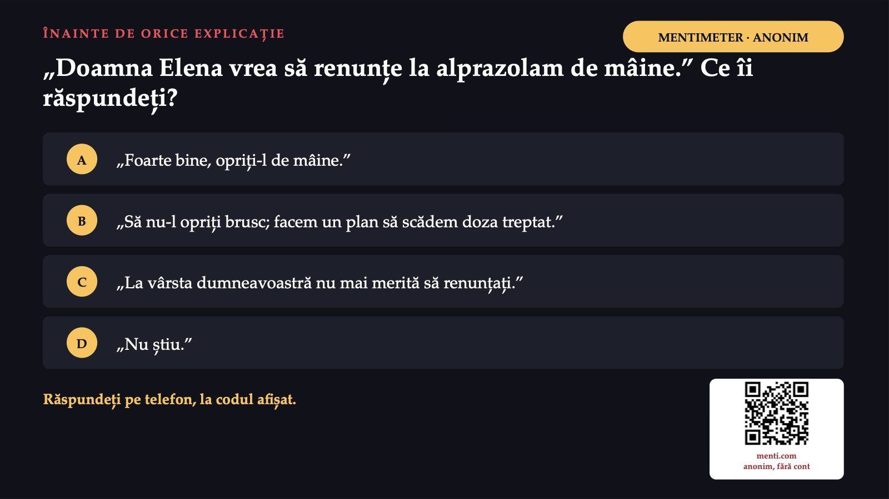
4 / 45Înainte de orice explicație, un vot anonim. Doamna Elena vă spune că vrea să renunțe la alprazolam de mâine. Ce îi răspundeți? Votați pe Mentimeter, la codul de pe ecran sau din linkul din chat. Nu e nevoie să știți deja varianta corectă; revenim la acest vot în prima parte, după ce vedem ce spun ghidurile.
Dependența fizică
![PARTEA ÎNTÂI · PRIMUL TERMEN NOU Dependența fizică Organismul s-a adaptat la un medicament luat regulat: oprirea bruscă sau scăderea prea rapidă a dozei produce sevraj. „Corpul s-a obișnuit cu pastila și protestează când nu o mai primește.” Poate apărea și la cine ia medicamentul exact cum i s-a spus. Ghidul comun din 2025: un rezultat așteptat, distinct de tulburarea de uz. DACĂ SPUNEȚI „Sunteți dependentă.” ea aude „sunteți o drogată”. DACĂ SPUNEȚI „Corpul s-a obișnuit; îl dezvățăm încet.” ea aude un plan.](diapozitive/C04/005.jpg) 5 / 45
5 / 45Primul termen nou: dependența fizică. Este starea în care organismul s-a adaptat la un medicament luat regulat, astfel încât oprirea bruscă sau scăderea prea rapidă a dozei produce simptome de sevraj. În cuvinte obișnuite, corpul s-a obișnuit cu pastila și protestează când nu o mai primește. Ghidul comun din 2025 o numește un rezultat așteptat al folosirii benzodiazepinelor, distinct de tulburarea de uz, iar ea poate apărea și la cine ia medicamentul exact cum i s-a spus. În prima ședință ați văzut că adicția înseamnă pierderea controlului asupra consumului. Doamna Elena nu își mărește singură doza și nu caută pastile pe ascuns. Diferența contează pentru cuvinte: „sunteți dependentă” se aude ca „sunteți o drogată”, iar „corpul s-a obișnuit, îl dezvățăm încet” se aude ca un plan.
câteva zile sau săptămâni
![CÂT DE REPEDE APARE „Doar pentru câteva săptămâni” câteva zile sau săptămâni FDA, comunicarea din 2020: după atât poate apărea dependența fizică de benzodiazepine, chiar luate conform prescripției. GHIDUL COMUN DIN 2025 Mulți pacienți care le iau de mai puțin de o lună, mai ales în doze mici, probabil nu au dependență fizică. Ea se poate dezvolta în câteva săptămâni și diferă de la un pacient la altul. După o rețetă nouă: reevaluați riscurile și beneficiile în cel mult o lună. Surse: FDA, comunicarea din 2020; ghidul clinic comun din 2025.](diapozitive/C04/006.jpg) 6 / 45
6 / 45Cât de repede apare? Autoritatea americană a medicamentului (FDA) avertizează, într-o comunicare din 2020, că dependența fizică de benzodiazepine poate apărea după câteva zile sau săptămâni de administrare regulată, chiar conform prescripției. Ghidul clinic comun publicat în 2025 de Societatea Americană de Medicină a Adicțiilor și de alte societăți medicale nuanțează: mulți pacienți care le iau de mai puțin de o lună, mai ales în doze mici, probabil nu au dependență fizică, dar ea se poate dezvolta în câteva săptămâni și diferă de la un pacient la altul. Citiți încă o dată fraza din caz: „doar pentru câteva săptămâni”. Este exact intervalul în care dependența poate începe. De aceea, ghidul cere ca, după o rețetă nouă, raportul dintre riscuri și beneficii să fie reevaluat în cel mult o lună.
69
![CÂT DE DES Ce se vede și ce nu se vede STATELE UNITE 24 de milioane au raportat, în 2023, că folosesc o benzodiazepină; aproximativ 20 de milioane conform prescripției 1 din 2 pacienți cu benzodiazepine orale le-au primit două luni sau mai mult, în 2018 ROMÂNIA 69 de cereri de asistență în 2024 (59 în 2023) pentru hipnotice și sedative fără prescripție medicală Doamna Elena, cu rețetă, nu apare în această cifră. Surse: ghidul clinic comun din 2025 (datele americane); raportul național privind situația drogurilor (datele pentru 2024).](diapozitive/C04/007.jpg) 7 / 45
7 / 45Cât de des se întâmplă? Pentru România nu am găsit o serie oficială publică despre câte persoane iau benzodiazepine pe termen lung, cu rețetă. Cifrele vin din Statele Unite, citate de ghidul din 2025: în 2023, aproape 24 de milioane de persoane au raportat că folosesc o benzodiazepină, dintre care aproximativ 20 de milioane conform prescripției; în 2018, aproximativ jumătate dintre pacienții cu benzodiazepine orale le-au primit două luni sau mai mult, adică mai mult decât intervalul în care dependența fizică poate începe. Din România vedem numai partea care ajunge la serviciile pentru adicții: 69 de cereri de asistență în 2024, față de 59 în 2023, pentru hipnotice și sedative. Observați formularea raportului: fără prescripție medicală. Doamna Elena, cu rețetă, nu apare în această cifră.
De ce ajunge rar într-o statistică?
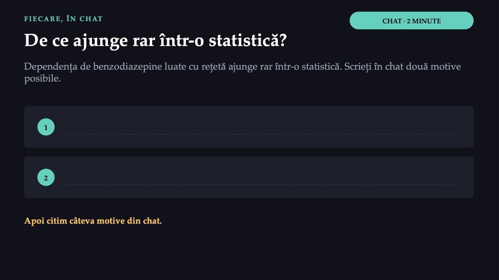
8 / 45Scrieți în chat două motive pentru care dependența de benzodiazepine luate cu rețetă ajunge rar într-o statistică; o frază pentru fiecare motiv ajunge. Apoi citim câteva dintre ele. Iată și câteva motive posibile, toate de verificat: pacientul nu se consideră bolnav, pentru că „le-a dat doctorul”; medicul reînnoiește rețeta fără să o numească problemă; nimeni nu cere ajutor până nu apare o criză, de exemplu o cădere sau un sevraj după o internare. Nu putem spune care dintre ele contează cel mai mult, pentru că nu avem date.
Varianta B: nu se oprește brusc
![VOTUL DE LA ÎNCEPUT Varianta B: nu se oprește brusc Ghidul comun din 2025: la utilizarea regulată, întreruperea bruscă poate produce un sevraj grav, potențial letal. Raportul european din 2026: simptomele de sevraj pot pune viața în pericol. A pare cea mai virtuoasă și este cea mai periculoasă. C pare blândă și este o renunțare: ghidul nu spune că vârstnicii nu mai merită să încerce, ci că reducerea se adaptează fiecărui pacient. Surse: ghidul clinic comun din 2025; EUDA, European Drug Report 2026.](diapozitive/C04/009.jpg) 9 / 45
9 / 45Să vedem ce ați votat. Varianta corectă este B: nu se oprește brusc, ci se face un plan de reducere treptată. Ghidul comun din 2025 spune că, la utilizarea regulată, întreruperea bruscă sau scăderea precipitată a dozei poate produce simptome de sevraj grave, potențial letale, și că benzodiazepinele nu se întrerup brusc la pacienții probabil dependenți fizic. Agenția Uniunii Europene pentru Droguri (EUDA) scrie același lucru în raportul european din 2026: simptomele de sevraj pot pune viața în pericol. Varianta A pare cea mai virtuoasă și este cea mai periculoasă. Varianta C pare blândă, dar este o renunțare: ghidul nu spune că vârstnicii nu mai merită să încerce, ci că reducerea se adaptează fiecărui pacient.
5–10%
![CUM ARATĂ O REDUCERE TREPTATĂ Luni de zile, nu de mâine 5–10% din doză, la fiecare 2–4 săptămâni: ritmul inițial obișnuit. De regulă, cel mult 25% la 2 săptămâni. Un reper, nu o rețetă fixă: ritmul se ajustează după pacient. CALENDARUL DOAMNEI ELENA O zecime din doză la fiecare trei săptămâni. Ritmul încetinește când apar simptome; știe dinainte pașii și poate reveni la cabinet. Valori ipotetice. Scopul poate fi oprirea sau doza la care riscurile nu mai depășesc beneficiile. Nu orice pacient ajunge la zero. Sursa: ghidul clinic comun din 2025.](diapozitive/C04/010.jpg) 10 / 45
10 / 45Cum arată o reducere treptată? Ghidul din 2025 dă un reper, nu o rețetă fixă: ritmul inițial este, în general, o scădere de 5–10% din doză la fiecare 2–4 săptămâni, iar ritmul nu depășește, de regulă, 25% la 2 săptămâni. Strategia se adaptează pacientului și se ajustează după cum răspunde. Pentru doamna Elena, cu valori ipotetice: aproximativ o zecime din doză la fiecare trei săptămâni. În primele luni ia aproape aceeași cantitate ca înainte, iar schimbarea abia se simte; ritmul încetinește când apar simptome. Planul durează luni, nu zile. Comparați-l cu cei șase ani în care s-a format dependența. Scopul poate fi oprirea medicamentului sau doza la care riscurile nu mai depășesc beneficiile: nu orice pacient trebuie să ajungă la zero.
Doamna Elena a citit ceva
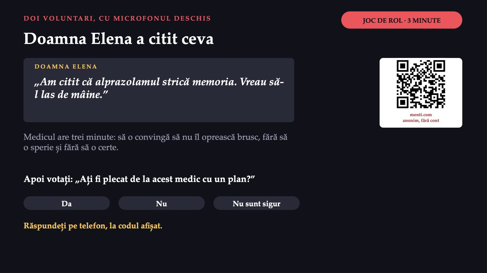
11 / 45Un joc de rol cu doi voluntari, cu microfonul deschis: unul este medicul de familie, celălalt doamna Elena. Cine vrea să participe folosește reacția „mână ridicată” din Teams. Doamna Elena a citit că alprazolamul strică memoria și vrea să-l lase de mâine. Medicul are trei minute să o convingă să nu îl oprească brusc, fără să o sperie și fără să o certe. Ceilalți urmăriți cuvintele pe care le alege medicul. Apoi votați pe Mentimeter, la codul de pe ecran sau din linkul din chat: ați fi plecat de la acest medic cu un plan?
Pacienta are, în parte, dreptate
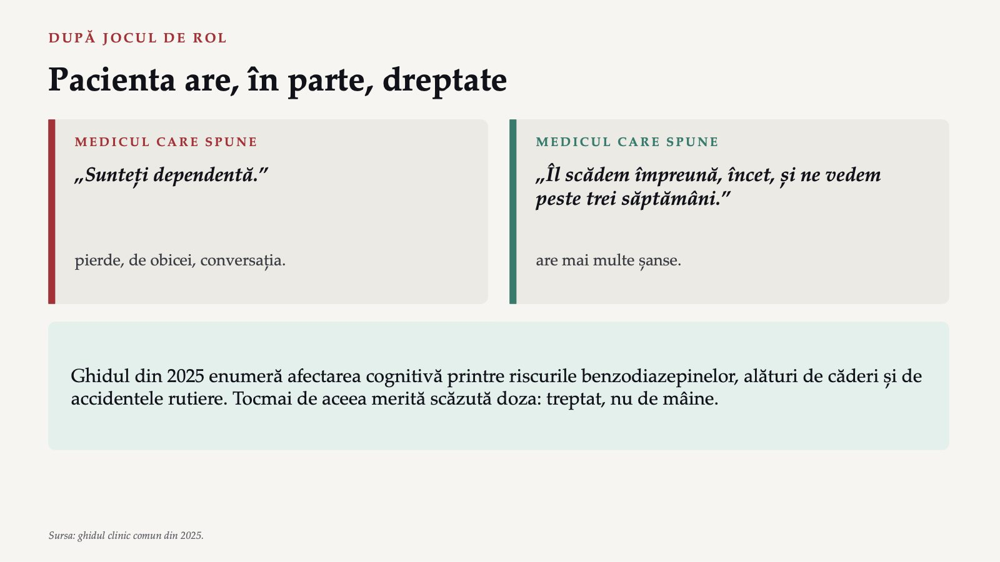
12 / 45Să vedem ce ați votat. Discuția de după joc pornește de la cuvintele folosite. Medicul care spune „sunteți dependentă” pierde, de obicei, conversația. Cel care spune „corpul s-a obișnuit cu medicamentul; îl scădem împreună, încet, și ne vedem peste trei săptămâni” are mai multe șanse. Pacienta are, în parte, dreptate, iar medicul i-o poate spune: ghidul din 2025 enumeră afectarea cognitivă printre riscurile asociate benzodiazepinelor, alături de căderi și de accidentele rutiere. Tocmai de aceea merită scăzută doza, dar treptat, nu de mâine.
66
![PASTILELE DE SOMN Cele care nu sunt benzodiazepine Zolpidem, zopiclonă, eszopiclonă, zaleplon: „medicamentele Z”. Altă structură chimică; mecanisme și riscuri asemănătoare. 66 de cazuri cu leziuni grave, inclusiv decese, în 26 de ani: mers sau condus fără ca pacientul să fie complet treaz. FDA, 2019: avertismentul cel mai vizibil din informațiile de prescriere. Zopiclona nu intră în comunicarea americană. CE ÎI SPUNEȚI PACIENTULUI „Dacă v-ați trezit vreodată făcând ceva fără să vă amintiți, opriți medicamentul și spuneți imediat medicului.” Surse: ghidul clinic comun din 2025; FDA, comunicarea din 2019.](diapozitive/C04/013.jpg) 13 / 45
13 / 45Pastilele de somn care nu sunt benzodiazepine: zolpidemul, zopiclona, eszopiclona și zaleplonul, numite adesea „medicamentele Z”. Nu au structura chimică a benzodiazepinelor, dar ghidul din 2025 notează că au mecanisme asemănătoare și pot avea riscuri asemănătoare, deși nu le tratează direct. FDA a adăugat în 2019, pentru eszopiclonă, zaleplon și zolpidem, avertismentul cel mai vizibil din informațiile de prescriere, din cauza comportamentelor complexe din somn: mersul, condusul mașinii sau alte activități făcute fără ca pacientul să fie complet treaz. Agenția a identificat 66 de cazuri cu leziuni grave, inclusiv decese, în 26 de ani. Cifra pare mică, dar cuprinde numai ce a fost raportat sau publicat. Pentru pacient, informația utilă e simplă: dacă v-ați trezit vreodată făcând ceva fără să vă amintiți, opriți medicamentul și spuneți imediat medicului.
40
 14 / 45
14 / 45Mai există o categorie pe care un student la medicină trebuie să o cunoască: benzodiazepinele noi, produse în afara oricărei autorizări. Raportul european din 2026 arată că 40 de benzodiazepine noi au fost notificate sistemului european de avertizare timpurie între 2007 și 2025, iar 28 dintre ele au apărut pe piață în 2024, în 22 de state ale Uniunii Europene și în Norvegia. Una dintre ele, bromazolamul, a fost introdusă de România în martie 2025 în tabelele substanțelor controlate, odată cu tramadolul și cu cinolazepamul. Și o diferență practică: supradoza cu opioide poate fi inversată cu naloxonă, dar cea cu benzodiazepine cere un alt antidot, administrat în general numai în spital.
Ce îi spuneți mâine unui coleg
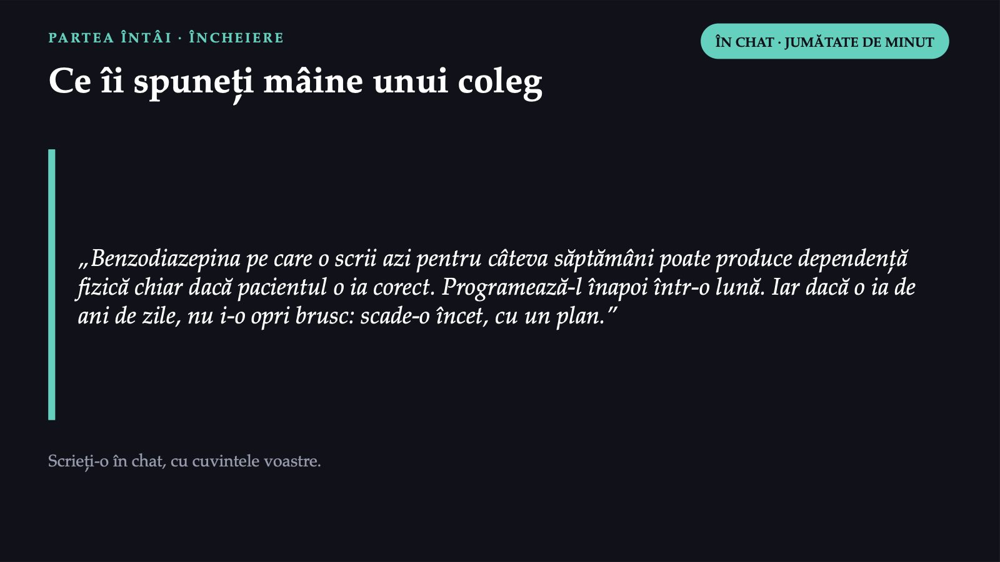
15 / 45Închidem prima parte cu o frază pe care i-o puteți spune mâine unui coleg. Scrieți-o în chat, cu cuvintele voastre. Ideea ei: benzodiazepina scrisă pentru câteva săptămâni poate produce dependență fizică chiar dacă pacientul o ia corect; îl programați înapoi într-o lună. Dacă o ia de ani de zile, nu i-o opriți brusc: o scădeți încet, cu un plan.
„Încă o cutie de opioid”, la trei luni după operație. Ce faceți?
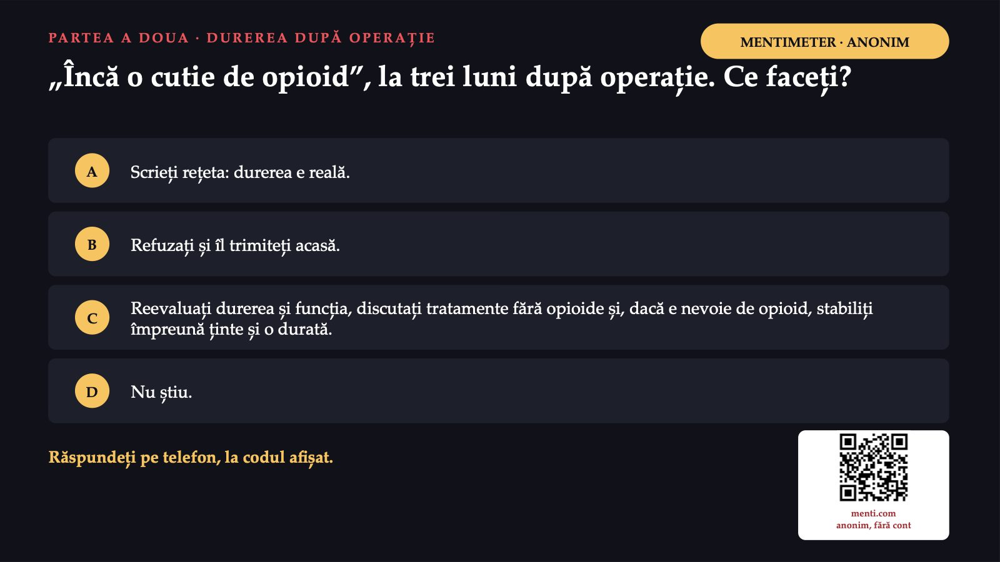
16 / 45Al doilea pacient al dimineții: bărbatul de treizeci și patru de ani, operat de hernie de disc acum trei luni, cere încă o cutie de opioid, „că altfel nu pot lucra”. Ce faceți? Votați pe Mentimeter, la codul de pe ecran sau din linkul din chat. Gândiți-vă la ce riscă pacientul în fiecare variantă.
Varianta C urmează ghidul
![GHIDUL CDC DIN 2022 Varianta C urmează ghidul 1 Durerea acută obișnuită: tratamentele fără opioide sunt cel puțin la fel de eficace. 2 Durerea de câteva săptămâni sau luni: tratamentele fără opioide sunt preferate. 3 Dacă e nevoie de opioid: cel mult cât cere durata așteptată a durerii severe. 4 Înainte de un tratament continuu: ținte de durere și de funcție, stabilite împreună. Varianta B pare prudentă, dar îl lasă singur cu durerea și cu o dependență posibilă, fără plan. Sursa: CDC, ghidul pentru prescrierea opioidelor în durere, 2022.](diapozitive/C04/017.jpg) 17 / 45
17 / 45Să vedem ce ați votat. Varianta C urmează ghidul american pentru prescrierea opioidelor în durere, publicat în 2022 de Centrele pentru Controlul și Prevenirea Bolilor (CDC). Pentru multe tipuri obișnuite de durere acută, tratamentele fără opioide sunt cel puțin la fel de eficace ca opioidele; în durerea subacută și cronică, de câteva săptămâni sau luni, ele sunt preferate. Când opioidele sunt necesare pentru durerea acută, ghidul recomandă cel mult cantitatea necesară pentru durata așteptată a durerii severe. Înainte de un tratament continuu, medicul stabilește împreună cu pacientul ținte de durere și de funcție. Varianta B pare prudentă, dar îl lasă pe pacient singur cu durerea și cu o dependență posibilă, fără plan.
806 000
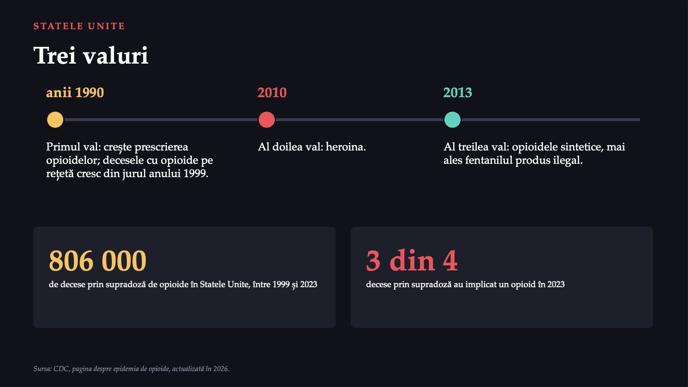
18 / 45Ca să înțelegeți de ce ghidul este atât de prudent, priviți ce s-a întâmplat în Statele Unite. CDC descrie, pe pagina actualizată în 2026, trei valuri ale deceselor prin supradoză de opioide. Primul a început odată cu creșterea prescrierii opioidelor în anii 1990; decesele cu opioide eliberate pe rețetă au crescut din jurul anului 1999. Al doilea val a început în 2010, cu heroina, iar al treilea în 2013, cu opioidele sintetice, mai ales fentanilul produs ilegal. Între 1999 și 2023, aproximativ 806 000 de persoane au murit în Statele Unite prin supradoză de opioide. În 2023, din aproximativ 105 000 de decese prin supradoză, aproape 80 000 au implicat opioide: aproximativ trei din patru.
Ce spune OMS și ce se combină
![DINCOLO DE STATELE UNITE Ce spune OMS și ce se combină DE CE AU CRESCUT SUPRADOZELE opioidele folosite în durerea cronică, mai disponibile; opioidele foarte puternice apărute pe piața ilegală. FACTORI DE RISC opioide pe rețetă, fără supraveghere medicală; o doză prescrisă de peste 100 mg de morfină sau echivalent, pe zi; opioide împreună cu alcool sau cu benzodiazepine. În România, opiaceele au cauzat cele mai multe decese directe, uneori cu benzodiazepine. CDC: prudență la opioid plus benzodiazepină. Surse: OMS, fișa despre supradoza de opioide, 2025; CDC, 2022; raportul național privind situația drogurilor.](diapozitive/C04/019.jpg) 19 / 45
19 / 45Organizația Mondială a Sănătății (OMS) face aceeași legătură la nivel global. În fișa din 2025, notează că supradozele de opioide au crescut în mai multe țări, în parte din cauza disponibilității crescute a opioidelor folosite în durerea cronică, dar și din cauza opioidelor foarte puternice apărute pe piața ilegală. Printre factorii de risc enumeră opioidele eliberate pe rețetă fără supraveghere medicală, o doză prescrisă de peste 100 mg de morfină sau echivalent pe zi și folosirea opioidelor împreună cu alcoolul sau cu benzodiazepinele. Aici se întâlnesc cele două cazuri ale dimineții: un pacient poate primi, de la medici diferiți, și o benzodiazepină, și un opioid. Ghidul CDC din 2022 cere prudență deosebită la această combinație. În România, opiaceele au cauzat cele mai multe decese asociate direct consumului de droguri, uneori împreună cu benzodiazepine.
Doctors at heart of US opioid crisis
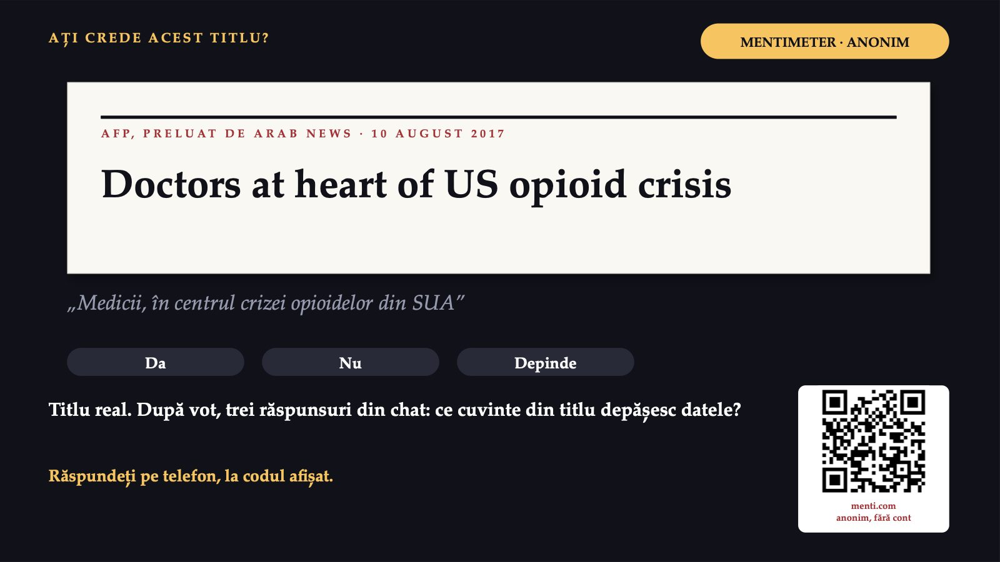
20 / 45Un titlu real de presă: AFP, preluat de Arab News la 10 august 2017, tradus pe ecran: „Medicii, în centrul crizei opioidelor din SUA”. L-ați crede? Votați pe Mentimeter. După vot, scrieți în chat ce cuvinte din titlu spun mai mult decât datele; citim trei răspunsuri.
„Medicii, în centrul crizei opioidelor din SUA”
![CUVINTELE CARE DEPĂȘESC DATELE „Medicii, în centrul crizei opioidelor din SUA” ✓ Adevărat: primul val a început cu creșterea prescrierii. ✗ Valurile doi și trei: heroina și fentanilul produs ilegal. ✗ Decesele cu opioide pe rețetă au scăzut cu aproape 12% între 2022 și 2023; în 2023, aproape 80 000 de decese prin supradoză au implicat opioide. ✗ Articolul însuși spune, mai jos, că medicii nu sunt singurii vinovați. Mai aproape de date: „Prescrierea largă a opioidelor a deschis prima etapă a crizei.” Surse: CDC; AFP, preluat de Arab News, 10 august 2017.](diapozitive/C04/021.jpg) 21 / 45
21 / 45Titlul are o parte de adevăr și o parte care depășește sursele. Partea de adevăr: primul val a început odată cu creșterea prescrierii. Ce depășește sursele sunt cuvintele „în centrul”, care pun medicii în mijlocul întregii crize. Al doilea și al treilea val au venit cu heroina și cu fentanilul produs ilegal. Decesele cu opioide eliberate pe rețetă au scăzut cu aproape 12% între 2022 și 2023, dar în 2023 aproape 80 000 de decese prin supradoză tot au implicat opioide. Chiar articolul spune, mai jos, că, după experți, medicii nu sunt singurii vinovați. O frază mai apropiată de date: „Prescrierea largă a opioidelor a deschis prima etapă a crizei.” Este mai puțin spectaculoasă și mai ușor de apărat.
50 000
![ÎN ULTIMII DOI ANI Ce s-a schimbat la noi și în Europa ROMÂNIA Ordonanța nr. 42/2024 prescriere, înregistrare și raportare electronice; trasabilitate mai bună Martie 2025 tramadolul, un analgezic opioid, intră în tabelele substanțelor controlate EUROPA, 2024 50 000 de comprimate cu nitazene, opioide sintetice foarte puternice, găsite în 10 țări (23 000 în 2023). Medicamentele false par legitime: un fals sentiment de siguranță. Un pacient care nu mai primește rețeta și își caută pastilele pe internet poate cumpăra altceva decât crede. Surse: Ordonanța nr. 42/2024; EUDA, European Drug Report 2026.](diapozitive/C04/022.jpg) 22 / 45
22 / 45Două decizii recente privesc direct cabinetul. Ordonanța nr. 42/2024 a modernizat prescrierea, înregistrarea și raportarea medicamentelor stupefiante și psihotrope, cu mecanisme electronice obligatorii și o trasabilitate mai bună, ca să scadă riscul deturnării lor spre piața ilegală. Apoi, în martie 2025, tramadolul, un analgezic opioid, a fost trecut în tabelele substanțelor controlate. Raportul european din 2026 arată de ce contează și în afara Statelor Unite: în 2024, autoritățile din 10 țări au găsit peste 50 000 de comprimate cu nitazene, opioide sintetice foarte puternice, față de 23 000 în 2023. Aspectul aparent legitim al medicamentelor false le poate da consumatorilor un fals sentiment de siguranță. Un pacient care nu mai primește rețeta și își caută pastilele pe internet poate cumpăra altceva decât crede.
Ce îi spuneți mâine unui coleg
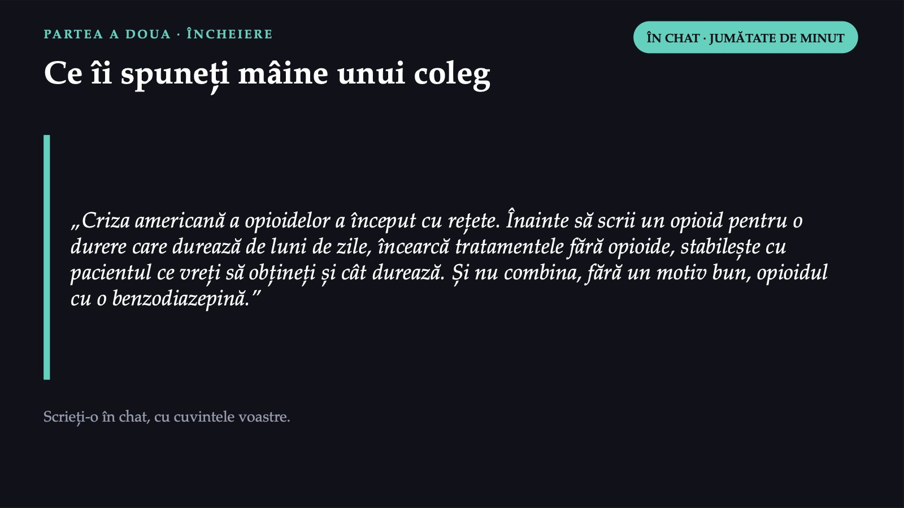
23 / 45Închidem a doua parte cu fraza pentru un coleg. Scrieți-o în chat, cu cuvintele voastre. Criza americană a opioidelor a început cu rețete. Înainte de un opioid pentru o durere de luni de zile, încercați tratamentele fără opioide și stabiliți cu pacientul ce vreți să obțineți și cât durează. Nu combinați, fără un motiv bun, opioidul cu o benzodiazepină.
Zece minute
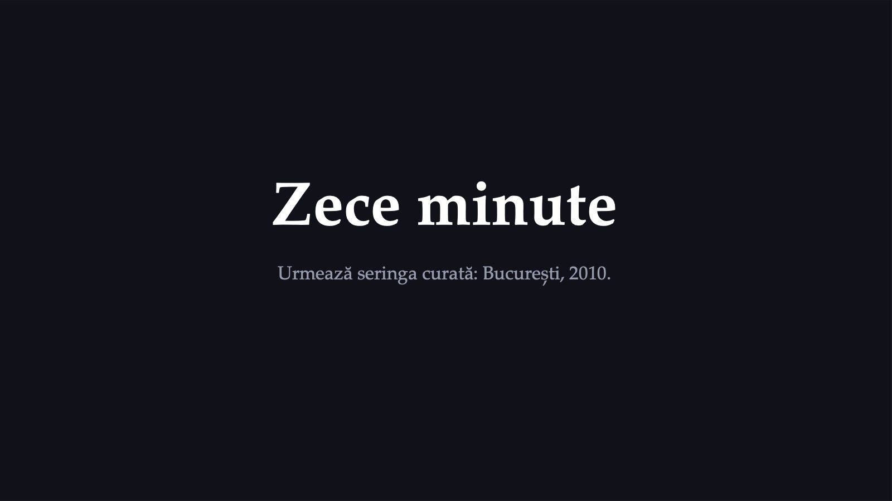
24 / 45Ne revedem în zece minute; rămâneți conectați la ședință. Urmează partea a treia, despre reducerea riscurilor: seringa curată, cu un caz din București, din 2010.
București, la câțiva ani după aderare
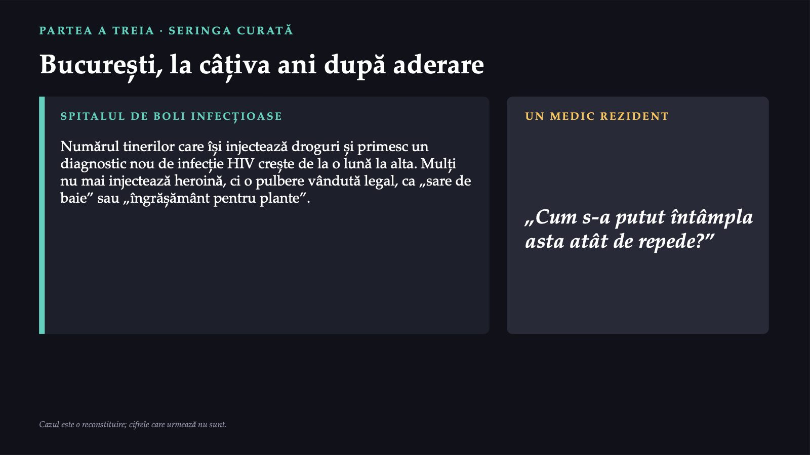
25 / 45Partea a treia începe cu un caz. Suntem la câțiva ani după aderarea României la Uniunea Europeană. La un spital de boli infecțioase din București, medicii observă că numărul tinerilor care își injectează droguri și primesc un diagnostic nou de infecție cu virusul imunodeficienței umane (HIV) crește de la o lună la alta. Mulți nu mai injectează heroină, ci o pulbere vândută legal, ca „sare de baie” sau „îngrășământ pentru plante”. Un medic rezident întreabă: cum s-a putut întâmpla asta atât de repede? Întrebarea lui este și a noastră. Cazul este o reconstituire; cifrele care urmează nu sunt.
de 20 de ori
![COMISIA THE LANCET · 2016 Două schimbări în același timp de 20 de ori creșterea diagnosticelor noi de HIV prin injectare o treime din HIV prin injectare în UE de atunci, Norvegia, Islanda și Turcia, 2010–2012: România și Grecia, împreună 1 Reducerea riscurilor, slăbită în 2010: finanțarea Fondului Global s-a pierdut odată cu aderarea. 2 Stimulante ieftine, încă necontrolate: șase până la zece injectări pe zi, față de două sau trei la heroină. Problema atribuirii: ambele cauze sunt numite, fără ponderea fiecăreia. Sursa: comisia The Lancet pentru sănătate publică și politica drogurilor, 2016.](diapozitive/C04/026.jpg) 26 / 45
26 / 45Comisia internațională pentru sănătate publică și politica drogurilor, publicată în 2016 de revista The Lancet, descrie ce s-a întâmplat. În 2010–2012, România și Grecia au avut împreună o treime din incidența infecției HIV la persoanele care își injectează droguri în statele Uniunii de atunci, plus Norvegia, Islanda și Turcia, cu o creștere de 20 de ori a diagnosticelor noi legate de injectare. Comisia numește două cauze venite împreună. Serviciile de reducere a riscurilor au fost în mare parte reduse în 2010, când organizațiile neguvernamentale au pierdut finanțarea Fondului Global odată cu aderarea. Și au apărut stimulante ieftine, încă necontrolate, injectate de șase până la zece ori pe zi, față de două sau trei ori la heroină. Recunoașteți problema atribuirii din ședința trecută: comisia nu spune cât din creștere se datorează fiecărei cauze.
Reducerea riscurilor
![AL DOILEA TERMEN NOU Reducerea riscurilor Politicile, programele și intervențiile care reduc efectele sanitare, sociale, juridice și economice ale consumului de droguri. Obiectivul principal nu este încetarea totală a consumului. „Dacă tot consumi, să nu mori și să nu te îmbolnăvești din asta.” EXEMPLE schimbul de seringi naloxona dată celor care pot fi martori la o supradoză camerele de consum supravegheat analiza drogurilor cumpărate tratamentul de substituție, într-un cadru medical obișnuit Surse: EUDA, European Drug Report 2026; raportul național privind situația drogurilor.](diapozitive/C04/027.jpg) 27 / 45
27 / 45Al doilea termen nou: reducerea riscurilor. În formularea raportului european din 2026, sunt politicile, programele și intervențiile care urmăresc să reducă efectele sanitare, sociale, juridice și economice ale consumului de droguri asupra persoanelor, comunităților și societăților. Raportul național român adaugă precizarea esențială: aceste servicii nu au ca obiectiv principal încetarea totală a consumului. În cuvinte obișnuite: dacă tot consumi, să nu mori și să nu te îmbolnăvești din asta. Exemplele cele mai cunoscute sunt schimbul de seringi, naloxona dată persoanelor care pot fi martore la o supradoză, camerele de consum supravegheat și analiza drogurilor cumpărate. Tratamentul de substituție este și el o formă de reducere a riscurilor, dar într-un cadru medical obișnuit.
Ce cuvânt vă vine în minte când auziți „schimb de seringi”?
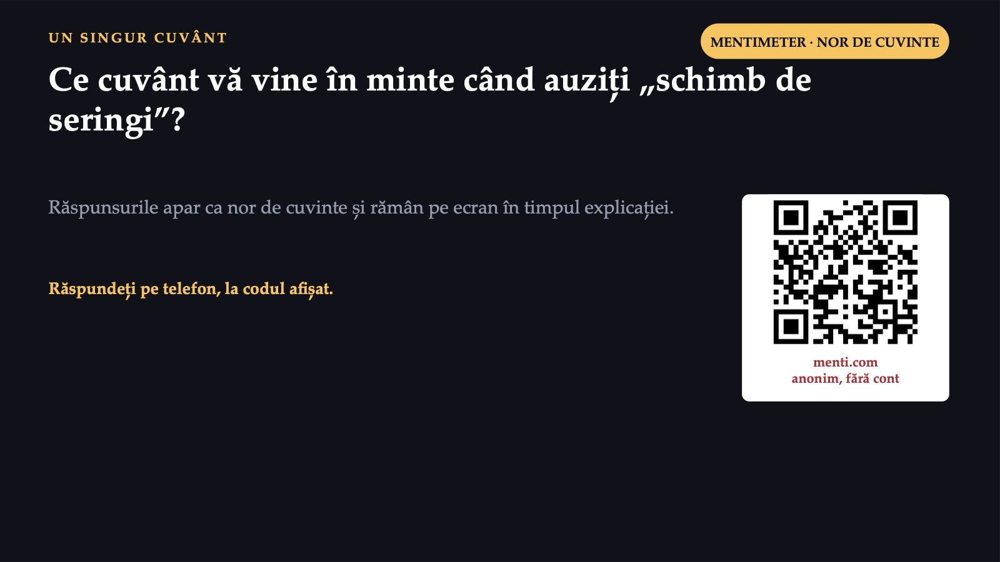
28 / 45Un singur cuvânt, primul care vă vine în minte când auziți „schimb de seringi”. Scrieți-l pe Mentimeter, la codul de pe ecran sau din linkul din chat. Nu există cuvinte greșite. Norul rămâne pe ecran cât discutăm obiecțiile care urmează.
Este etic?
 29 / 45
29 / 45Obiecția cea mai frecventă este una morală: statul îi ajută pe oameni să se drogheze. Merită luată în serios, pentru că o au și mulți medici. Răspunsul vine din propria voastră practică. Un medic tratează un fumător pentru bronșită chiar dacă acesta continuă să fumeze; un chirurg operează un motociclist accidentat fără să îi ceară să renunțe la motocicletă. Medicina nu condiționează îngrijirea de virtutea pacientului: îngrijirea vine înainte de abstinență, nu în locul ei. A doua obiecție, că serviciile acestea cresc consumul, este una de fapt și se poate verifica; pentru schimbul de seringi, notele nu citează un studiu care să măsoare acest efect. Prima se discută cu valori, a doua cu date, exact ca în ședința trecută.
Ce funcționează: observați verbele
 30 / 45
30 / 45Raportul european din 2026 face o distincție pe care merită să o rețineți. Pentru programele de schimb de ace și seringi și pentru naloxona dată acasă, dovezile actuale arată eficacitate. Pentru camerele de consum, dovezile sunt încă în dezvoltare, iar evaluarea este dificilă, dar datele disponibile arată că ele pot contribui la reducerea deceselor legate de droguri. Observați verbele: „arată eficacitate” la primele două, „pot contribui” la camere. Sunt niveluri diferite de siguranță. OMS adaugă, în fișa din 2025, că programele care dau naloxonă persoanelor care pot fi martore la o supradoză, împreună cu instruirea, ar putea reduce substanțial decesele prin supradoză. Iar naloxona e ușor de apărat: la cine nu a luat opioide, nu are, practic, niciun efect.
Ce există în Europa
![EUROPA Ce există în Europa Schimbul de ace și seringi în toate statele UE și în Norvegia, 2024; ținta OMS pentru 2025: 7 din 25 de țări cu date Naloxona dată acasă în 19 țări europene, până în 2025 Naloxona fără prescripție în Danemarca, Franța, Italia, Suedia și Norvegia Camerele de consum 100, în 13 state UE și în Norvegia, în 2025 La nivel mondial (OMS, 2025): naloxonă fără prescripție în Australia, Canada, Italia, Regatul Unit și Ucraina. Surse: EUDA, European Drug Report 2026, modulul „Harm reduction”; OMS, fișa din 2025.](diapozitive/C04/031.jpg) 31 / 45
31 / 45Ce există în Europa? Potrivit raportului european din 2026, în 2024 programe de schimb de ace și seringi existau în toate statele Uniunii și în Norvegia, dar numai 7 din 25 de țări cu date atinseseră ținta OMS pentru 2025. Până în 2025, naloxona dată acasă exista în 19 țări europene, iar în Danemarca, Franța, Italia, Suedia și Norvegia se eliberează fără prescripție. În 2025 funcționau 100 de camere de consum de droguri în 13 state ale Uniunii și în Norvegia. La nivel mondial, OMS menționează Australia, Canada, Italia, Regatul Unit și Ucraina printre țările care au introdus naloxona fără prescripție. Rețineți lista; în România vom vedea ce lipsește.
2 571
 32 / 45
32 / 45În România, raportul național descrie un program de reducere a riscurilor disponibil exclusiv în București, oferit de asociația ARAS și de echipa mobilă a direcției de asistență socială a Sectorului cinci. În 2024, programul a avut 2 571 de beneficiari care își injectează droguri. S-au distribuit 514 760 de seringi, cu 33,9% mai puține decât în anul precedent; pe beneficiar, de la 446 la 301. Două servicii lipsesc. Naloxona este disponibilă doar în unitățile de primiri urgențe și în sistemul național de urgență și prim ajutor calificat: cine este martor la o supradoză nu o are în buzunar. Camerele de consum supravegheat nu există, iar raportul consemnează că nu au fost inițiate demersuri pentru înființarea lor.
Din o sută de persoane care își injectează droguri, testate în programele din București, câte aveau hepatita C?
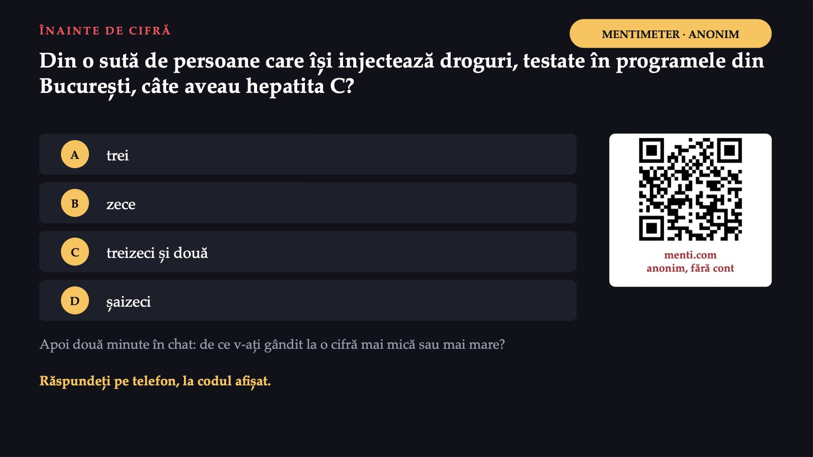
33 / 45Înainte de cifră, un vot: din o sută de persoane care își injectează droguri, testate în programele din București, câte aveau hepatita C? Votați pe Mentimeter, la codul de pe ecran sau din linkul din chat. Apoi scrieți în chat, într-o frază, de ce v-ați gândit la o cifră mai mică sau mai mare.
1 din 3
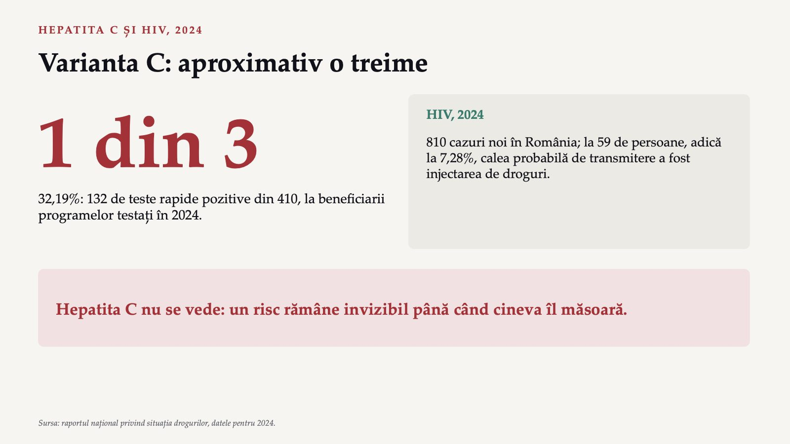
34 / 45Să vedem ce ați votat. Varianta corectă este C, aproximativ o treime. La beneficiarii programelor de reducere a riscurilor testați în 2024, prevalența infecției cu virusul hepatitei C a fost de 32,19%: 132 de teste rapide pozitive din 410. Tot în 2024 au fost diagnosticate în România 810 cazuri noi de infecție HIV și de sindrom al imunodeficienței dobândite (SIDA), iar injectarea de droguri a fost calea probabilă de transmitere la 59 de persoane, adică la 7,28%. Mulți aleg o cifră mai mică, pentru că hepatita C nu se vede. Este un bun exemplu de risc care rămâne invizibil până când cineva îl măsoară.
Moțiunea și cele două tabere
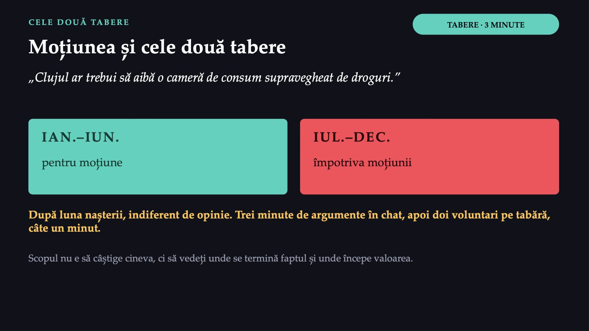
35 / 45Moțiunea: „Clujul ar trebui să aibă o cameră de consum supravegheat de droguri.” Ne împărțim după luna nașterii: cei născuți între ianuarie și iunie susțin moțiunea, cei născuți între iulie și decembrie se opun, indiferent de opinia fiecăruia. Scrieți argumentele în chat, cu „PENTRU” sau „ÎMPOTRIVĂ” în față. Apoi doi voluntari din fiecare tabără, anunțați prin reacția „mână ridicată” din Teams, vorbesc câte un minut, cu microfonul deschis. Ca în ședința trecută, scopul nu este să câștige cineva, ci să vedeți unde se termină faptul și unde începe valoarea.
Dovada care vă contrazice
![TABERE · A DOUA RUNDĂ A DOUA RUNDĂ Dovada care vă contrazice TABĂRA „PENTRU” PRIMEȘTE „Dovezile despre camerele de consum sunt încă în dezvoltare, iar evaluarea este dificilă…” TABĂRA „ÎMPOTRIVĂ” PRIMEȘTE „… dar datele disponibile arată că ele pot contribui la reducerea deceselor legate de droguri.” Includeți dovada în argument. Câte un voluntar pe tabără, un minut. Aceeași propoziție, tăiată în două. Cine plătește, unde se deschide, ce spun vecinii și legea: datele informează, dar nu decid. Sursa: EUDA, European Drug Report 2026.](diapozitive/C04/036.jpg) 36 / 45
36 / 45A doua rundă. Fiecare tabără primește pe ecran o dovadă care îi contrazice poziția și trebuie să o includă în argument. Tabăra „pentru” primește formularea raportului european: dovezile despre camerele de consum sunt încă în dezvoltare, iar evaluarea este dificilă. Tabăra „împotrivă” primește continuarea aceleiași fraze: datele disponibile arată că ele pot contribui la reducerea deceselor legate de droguri. Câte un voluntar din fiecare tabără mai vorbește un minut. Observați că ambele tabere au primit aceeași propoziție, tăiată în două: în dezbaterea publică, fiecare parte citează des jumătatea care îi convine. Întrebările care rămân deschise sunt de politică, nu de știință: cine plătește, unde se deschide, ce spun vecinii, ce spune legea. Pentru ele, datele informează, dar nu decid.
Ce îi spuneți mâine unui coleg
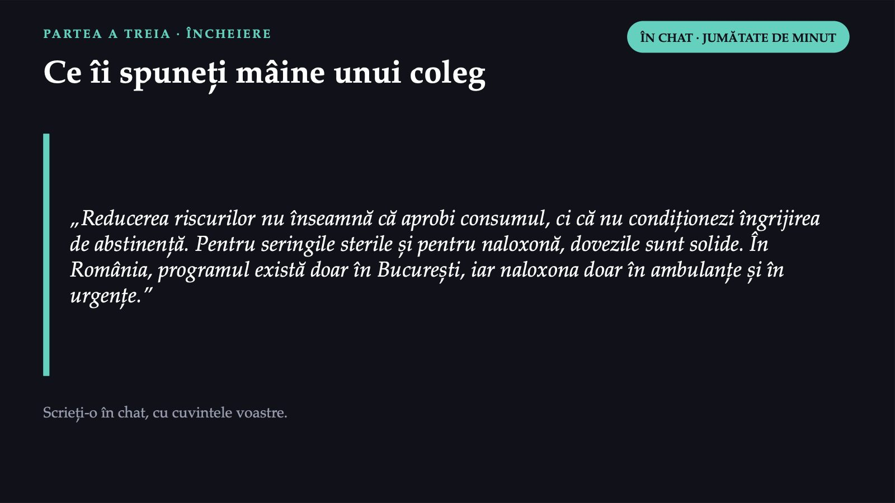
37 / 45Închidem partea a treia cu fraza pentru un coleg. Scrieți-o în chat, cu cuvintele voastre. Ideea ei: reducerea riscurilor nu înseamnă că aprobați consumul, ci că nu condiționați îngrijirea de abstinență. Pentru seringile sterile și pentru naloxonă, dovezile sunt solide. În România, programul există doar în București, iar naloxona doar în ambulanțe și în urgențe.
Tratamentul de substituție
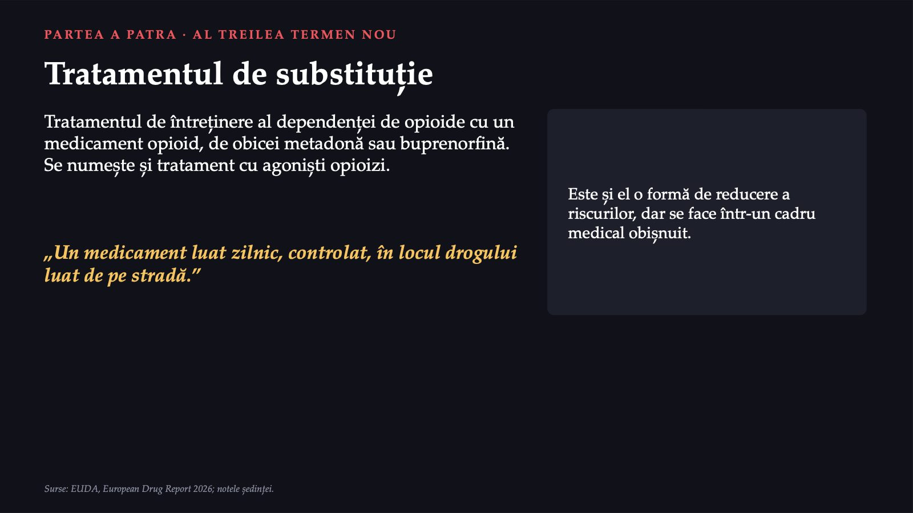
38 / 45Partea a patra și al treilea termen nou: tratamentul de substituție. Este tratamentul de întreținere al dependenței de opioide cu un medicament opioid, de obicei metadonă sau buprenorfină; se numește și tratament cu agoniști opioizi. În cuvinte obișnuite: un medicament luat zilnic, controlat, în locul drogului luat de pe stradă. Este și el o formă de reducere a riscurilor, dar se face într-un cadru medical obișnuit. Legătura cu partea a doua: ghidul CDC din 2022 nu recomandă dezintoxicarea singură, fără aceste medicamente, la pacienții cu tulburare de consum de opioide, din cauza riscului crescut de reluare a consumului, de supradoză și de deces. Medicamentele se discută pe larg în ședința a șasea.
Din zece persoane care au nevoie, în lume, de tratament pentru dependența de opioide, câte îl primesc?
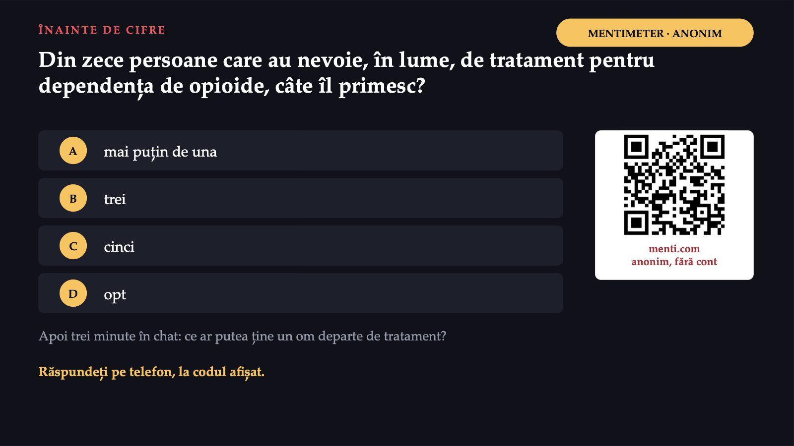
39 / 45Înainte de cifre, un vot: din zece persoane care au nevoie, în lume, de tratament pentru dependența de opioide, câte credeți că îl primesc? Votați pe Mentimeter, la codul de pe ecran sau din linkul din chat. Apoi scrieți în chat ce ar putea ține un om departe de tratament.
505 000
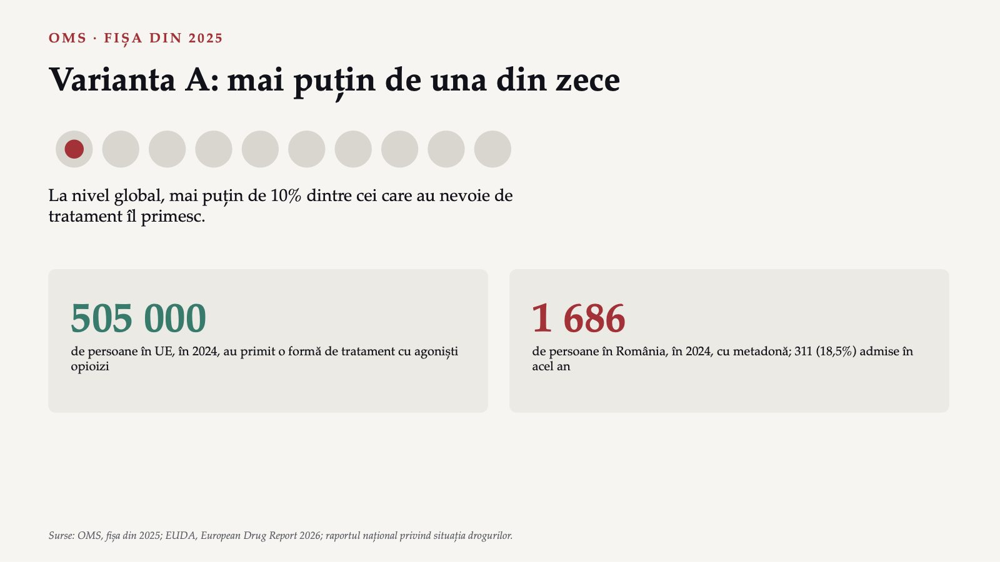
40 / 45Să vedem ce ați votat. Varianta corectă este A: în fișa din 2025, OMS estimează că, la nivel global, mai puțin de 10% dintre persoanele care au nevoie de tratament pentru dependența de opioide îl primesc. În Uniunea Europeană, în 2024, aproximativ 505 000 de persoane au primit o formă de tratament cu agoniști opioizi. În România, în 2024, 1 686 de persoane au primit tratament de substituție cu metadonă; dintre ele, 311, adică 18,5%, au fost admise în acel an, iar restul erau în program din anii anteriori. Comparați aceste cifre cu motivele pe care le-ați scris în chat.
10
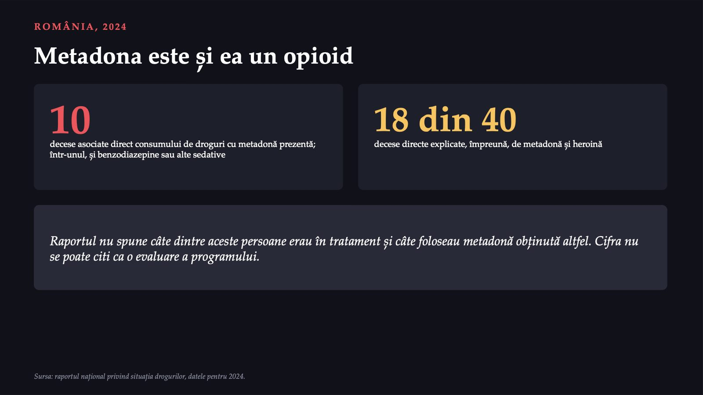
41 / 45Metadona este însă și ea un opioid, cu riscurile unui opioid. În 2024, în România, metadona a fost prezentă în 10 cazuri de deces asociat direct consumului de droguri, iar metadona și heroina au explicat împreună 18 din cele 40 de decese directe. Într-unul dintre cele 10 decese cu metadonă, raportul notează și benzodiazepine sau alte sedative luate împreună cu ea: aceeași combinație ca în partea a doua. Raportul nu spune câte dintre aceste persoane erau în tratament și câte foloseau metadonă obținută altfel. De aceea, cifra nu se poate citi ca o evaluare a programului.
Ce îi spuneți mâine unui coleg
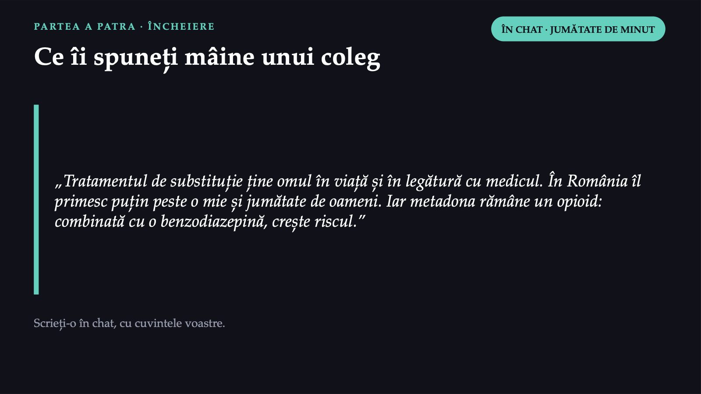
42 / 45Închidem partea a patra cu fraza pentru un coleg. Scrieți-o în chat, cu cuvintele voastre. Ideea ei: tratamentul de substituție ține omul în viață și în legătură cu medicul. În România îl primesc puțin peste o mie și jumătate de oameni. Iar metadona rămâne un opioid: combinată cu o benzodiazepină, crește riscul.
Ce faceți diferit de mâine
![ÎN PRACTICĂ Ce faceți diferit de mâine 1 Prima rețetă de benzodiazepină sau de somn: programați pacientul înapoi în cel mult o lună. 2 Ani de benzodiazepină: nu o opriți brusc și nu certați; reducere treptată, cu întâlniri programate. 3 Durere de luni de zile: întâi tratamentele fără opioide; ținte de durere și de funcție, împreună. 4 Opioid și benzodiazepină pe aceeași fișă: e nevoie de amândouă? 5 „Statul îi ajută să se drogheze”: valorile se discută, faptele se verifică. 6 Martor la o supradoză: sunați imediat la numărul unic de urgență.](diapozitive/C04/043.jpg) 43 / 45
43 / 45Șase lucruri pe care le puteți face de mâine, ca studenți și ca viitori medici. Când scrieți pentru prima dată o benzodiazepină sau un medicament de somn, programați pacientul înapoi în cel mult o lună și spuneți-i de la început cât ar trebui să dureze tratamentul. Când un pacient o ia de ani de zile, nu i-o opriți brusc și nu îl certați: propuneți o reducere treptată, cu întâlniri programate. La o durere de luni de zile, întâi tratamentele fără opioide și ținte stabilite împreună. Opioid și benzodiazepină pe aceeași fișă: vă opriți și întrebați dacă e nevoie de amândouă. Obiecția „statul îi ajută să se drogheze” o despărțiți în două: valorile se discută, faptele se verifică. Iar ca martori la o supradoză, sunați imediat la numărul unic de urgență: în România, naloxona o au echipajele de urgență.
Rețeta, durerea, seringa, substituția
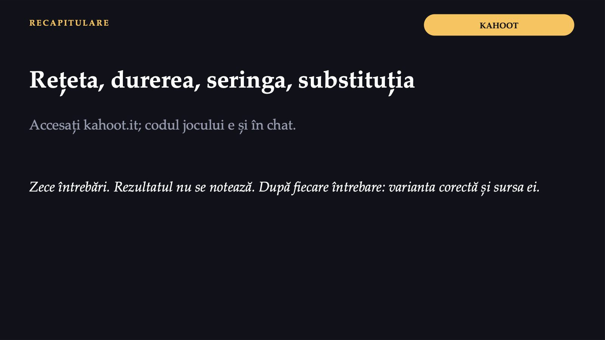
44 / 45Recapitulăm cu un Kahoot de zece întrebări despre rețeta doamnei Elena, durerea după operație, seringa curată și tratamentul de substituție. Accesați kahoot.it și introduceți codul jocului; îl găsiți pe ecran și în chat. Rezultatul nu se notează. După fiecare întrebare apar varianta corectă și sursa ei.
Trei întrebări pentru titular
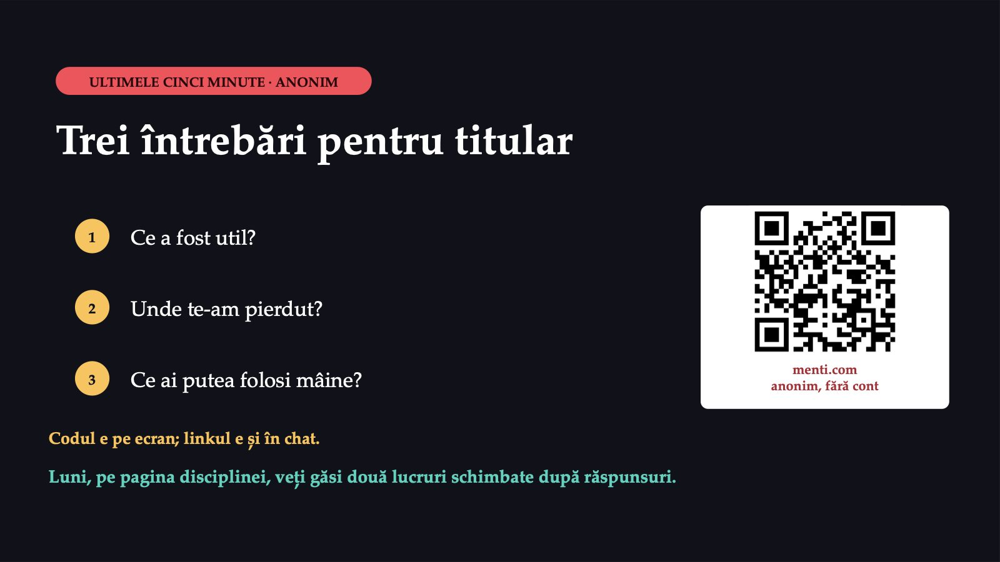
45 / 45Ultimele cinci minute sunt ale voastre: trei întrebări anonime pe Mentimeter. Ce a fost util? Unde v-am pierdut? Ce ați putea folosi mâine? Codul e pe ecran, iar linkul e și în chat. Răspunsurile se citesc, iar pe pagina disciplinei veți găsi apoi două lucruri schimbate după ele. Vă mulțumesc.
Săgeți sau spațiu: navigare · O: vedere de ansamblu · N: notele prezentatorului · F: ecran complet · Esc: închidere